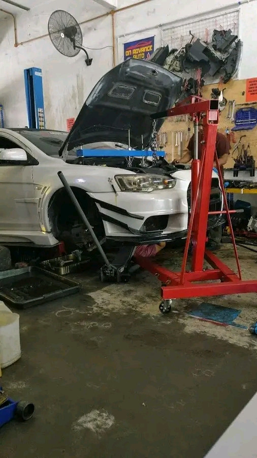
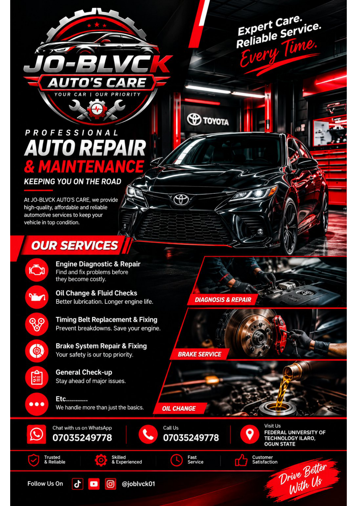

🛠️
Engine Diagnostic & Repair
Identify engine issues and discuss the right repair approach for your vehicle.
Reliable vehicle diagnostics, repairs and routine maintenance with a focus on quality workmanship, clear communication and dependable service.
At JO-BLVCK AUTO'S CARE, we help vehicle owners keep their cars safe, dependable and road-ready. From routine maintenance to identifying and fixing vehicle problems, we approach every job with care and attention to detail.
Our goal is simple: quality repairs, honest communication and service you can feel confident about. Contact us to discuss your vehicle and the support it needs.

From maintenance checks to repair work, get in touch and tell us what your vehicle needs.
Identify engine issues and discuss the right repair approach for your vehicle.
Routine oil and fluid checks to help keep your vehicle running smoothly.
Timing belt inspection and replacement or fixing, as required.
Brake system checks and repairs to support safe vehicle operation.
General vehicle checks to help identify maintenance needs and concerns.
Have a different vehicle issue? Contact us to discuss the problem and available support.
A look at automotive repair work and workshop activity. We can add more photos of your own completed jobs anytime.


Here are answers to common questions about our auto care services. If you need more information, contact us directly.
We offer engine diagnostics and repairs, oil changes and fluid checks, timing belt replacement, brake system repairs, general vehicle check-ups and other auto repairs.
We are located around the Federal University of Technology Ilaro, Ogun State, Nigeria. Please contact us for directions before visiting.
Call or send us a WhatsApp message on 07035249778 to discuss your vehicle and arrange a visit.
Send us your vehicle's make, model and a description of the problem so we can confirm how we can help.
Yes. Tell us about your vehicle and the problem. We can discuss likely costs, although the final price may depend on inspection and any parts required.
We recommend contacting us first to confirm availability and avoid an unnecessary trip.
If possible, stop somewhere safe. If you suspect overheating or another serious fault, switch off the engine and contact us for guidance. Do not continue driving if it may be unsafe.
We value every customer and welcome honest feedback about your experience with JO-BLVCK AUTO'S CARE.
Have we serviced your vehicle? Share an honest review to help other drivers learn about our service.
Your suggestions help us understand what's working well and where we can do better.
Send your feedback directly to us on WhatsApp. With your permission, we can feature your review on this website.
These are invitations to share feedback, not published customer testimonials. Only genuine reviews will be displayed, with the customer's permission.
Fill in the details below and send your request directly to us on WhatsApp. We'll review the information and discuss the next steps with you.
Reach out to discuss a repair, ask about our services or arrange a visit.
For faster assistance, include your car make and model, describe the issue you are experiencing, and let us know when you would like to visit.
Please contact us to confirm availability, pricing and the exact workshop directions before travelling.
Find the area on Maps ↗